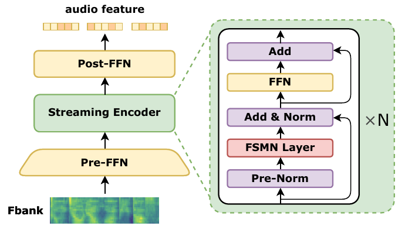
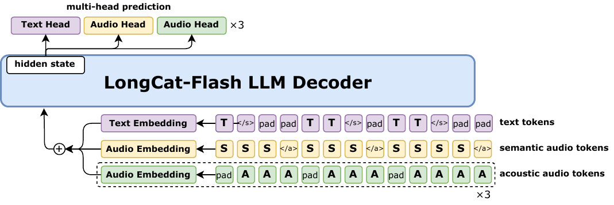
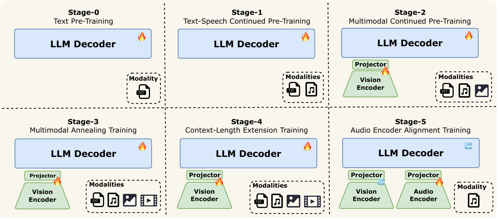

1
Problem & Architecture: Real-Time Omni at 560B Scale
Real-time omni-modal interaction faces four intertwined difficulties: cross-modal heterogeneity (text/speech/image/video structures differ wildly), unified offline + streaming (algorithms diverge), millisecond-level latency (a 560B inference is itself an engineering feat), training efficiency (FSDP impractical at 560B; pipeline bubble amplified by heterogeneity).

Figure 1: Overall architecture — three lightweight modules + LongCat-Flash LLM backbone
Core Philosophy: Encoder-Decoder Stitched Omni
Keep LongCat-Flash's ScMoE + zero-computation experts + MLA intact, attach 3 lightweight modules (ViT 637M + Audio Encoder ~600M + Audio Decoder ~600M), achieve early-fusion via 6-stage curriculum without breaking single-modal performance. This is the methodology split from [[2603_LongCat_Next|LongCat-Next]]'s discrete-token path.
ViT Configuration (LongCat-ViT 637M)
Built on UnivTIT work. Patch 14, hidden 1280, 32 layers, 2D-RoPE, native resolution encoding (patch range 576-5832, no forced resize) + 2× pixel-unshuffle, contrastive pretraining on 14.6B samples. Avoids information loss on extreme aspect ratios.
LLM Backbone: Inherits LongCat-Flash
560B / 27B-active ScMoE with MLA + zero-computation experts, per-token variable compute budget. Stage 0 text pre-training checkpoint is the omni starting point; the LLM architecture is untouched. This is the LongCat series' "foundation philosophy".

Figure: Audio Encoder architecture — FSMN replaces self-attention for bounded-context streamingsrc/assets/audio_encoder.png '">
Figure 2: Audio Encoder — FSMN + CTC for streaming input encoding
Audio Encoder Design: Sacrifice Everything for Latency
80-dim Fbank input → Pre-FFN 8× downsample (80ms/frame) → FSMN layers replace self-attention (KV cache is a disaster for long-streaming audio) → last 6 layers with one-frame look-ahead → CTC loss training. Stage 5 aligns continuous features via ASR + audio understanding data.
2
Speech LLM & Streaming Audio-Visual Interaction
Speech LLM design philosophy: discrete tokens for LLM training, continuous features for input understanding—two parallel paths. Audio Codec uses 4 codebooks: 1 semantic (easy for LLM to predict) + 3 acoustic (complement timbre/emotion/prosody).

Figure: Speech LLM pattern — 4 codebook input, 4 audio prediction heads outputsrc/assets/speech_llm_pattern.png '">
Figure 3: Speech LLM pattern — discrete token training + 4 parallel prediction heads
Audio Tokenizer (LongCat-Audio-Codec)
16.67 Hz frame rate, slices waveform into 4 codebook discrete tokens. Stages 1-4 use discrete token input (training efficiency, next-token prediction alignment), but discretization loses detail, so Stage 5 adds audio encoder with continuous feature retraining.
Audio Decoder: GAN + Code2Wav
LSTM + Conv + causal transposed conv, look-ahead only 3 frames (≈180ms). No diffusion/flow-matching code2mel (despite higher quality) due to slow inference; GAN-trained Code2Wav directly satisfies low latency.

Figure 4: Asynchronous Streaming Pipeline — end-to-end <100ms first-packet latency
Mechanism 1: Streaming Audio-Visual Feature Interleaving
Offline can directly concat(audio, video); streaming must prefill as early as possible. Chunk-wise interleaved format (each chunk = 1 second): <timestamp>: <video> <audio-start> <audio> ..., timestamps as text Second{i}.
Mechanism 2: Sparse-Dense Sampling Strategy
User input phase: chunk = 1s, video 2 FPS (dense) → preserve information; model reply phase: chunk = 2s, video 0.5 FPS (sparse) → buffer to next turn. Model "watches" video while replying.
End-to-End Latency <100ms
Each packet = 1s audio + 2 video frames; streaming prefill (compute while receiving); user's pause 600-700ms used for VAD endpoint detection overlapping with prefill; first packet returned within <100ms after endpoint.
Modality-Decoupled Parallelism (MDP)
Modality encoder uses HSDP; LLM decoder uses PP + ZeRO-1 DP + CP + EP. InnerDP aligns modality encoder DP rank with LLM decoder one-to-one. 4-phase execution: Data Loading → Modality Encoder Forward → LLM Fwd+Bwd → Modality Encoder Bwd. Multi-modal training keeps >90% text-only throughput, single-device memory from 137GB to 72GB.
3
Training & Benchmarks: 6-Stage Curriculum + Open-Source SOTA
Most important training design: progress by "sequence modeling difficulty"—text → speech → image → video, gradually add modalities, avoid one modality's training dragging another down. Key lesson: train speech first, then image (reverse order dramatically degrades speech).

Figure: 6-stage pre-training curriculum — text → speech → image → video → long-ctx → audio alignmentsrc/assets/pretraining_stages.png '">
Figure 5: 6-stage Pre-Training Curriculum — total 2.5T+ multimodal tokens
Figure 6: Benchmark overview — OmniBench 61.38 / WorldSense 60.89 / DailyOmni 82.38
Figure 7: Qualitative analysis — 6-dim real-time interaction (200 3-min dialogues, 250 users, 3-annotator)
Real-Time Interaction: Open-Source SOTA 1.37, Gap to Closed
Real-time interaction score (200 3-min multi-turn dialogues, 10 expert dialoguers): Doubao 1.92 / GPT-4o 1.79 / LongCat-Flash-Omni 1.37 (open-source SOTA, +0.56 over Qwen3-Omni) / Qwen3-Omni 0.81. Paralinguistic 91.5 first; Human-likeness / Real-timeness still gaps.
Audio ASR Extremely Strong
LibriSpeech test-clean 1.57 / test-other 4.01, AISHELL-1 = 0.63 (extreme), CommonVoice15-zh 4.98 (behind Qwen3-Omni 4.31). Audio-to-Text Chat: VoiceBench IFEval 77.99 (first), AdvBench 100 (first).
OmniBench
61.38
Open-source SOTA; only 5.4 behind Gemini-2.5-Pro
AISHELL-1
0.63
Mandarin ASR extreme, far beyond peers
DailyOmni
82.38
Beats Gemini-2.5-Pro (80.61) and Flash (80.78)
Paralinguistic
91.5
Paralinguistic understanding first (even beats Doubao 88.0)
① Encoder-Decoder Stitching
560B MoE backbone untouched; attach ViT 637M + Audio Encoder/Decoder ~1.2B. Modules independently optimizable, bit-level consistency, easy deployment—a mature stitching work.
② Real-Time Audio-Visual
Chunk-wise interleaving + Sparse-Dense Sampling: user input 1s/2FPS (dense), model reply 2s/0.5FPS (sparse). Model "watches" video while replying.
③ <100ms First-Packet
Streaming prefill overlaps VAD endpoint detection; first packet returned <100ms after endpoint. End-to-end streaming audio-visual at 560B scale—an engineering feat.
④ Modular Base Mounting
After multimodal training, text ability not only preserved but slightly improved (GPQA +0.67 / MATH +1.98 / MultiPL-E +1.51). Strongest evidence of early-fusion success; easy reproducibility.